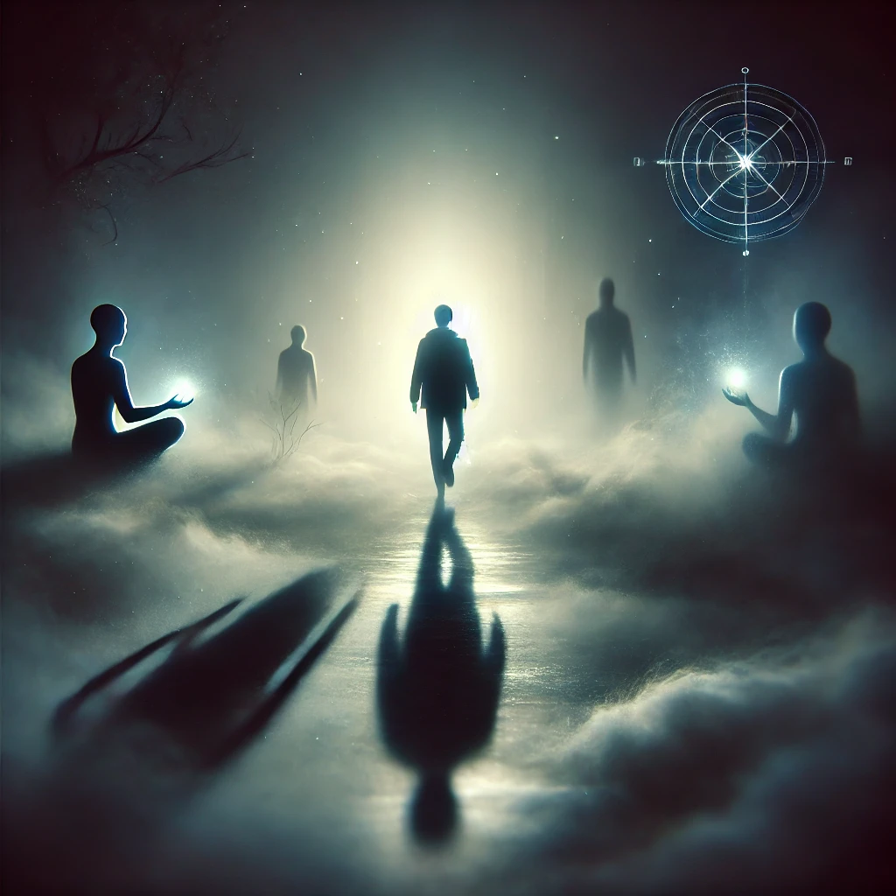

The shadows around you grow thicker, the air colder, yet there is no fear—only a quiet invitation. You take a step forward into the abyss, your senses sharpening as the darkness envelops you. The compass in your hand dims until it no longer glows, as if trusting you to find your way without it.
The silence is profound, broken only by the sound of your breath. Shapes move in the shadows, reflections of emotions you’ve buried, memories you’ve forgotten. They don’t threaten you; instead, they invite you to look closer. The voice of the unseen echoes softly:
“The darkness holds no malice, only truths. To embrace it is to see yourself wholly. What will you find within its depths?”
A faint light appears in the distance, its glow pulsating like a heartbeat. As you approach, you see three shadowed paths, each calling to a different part of you.

Which path will you take?